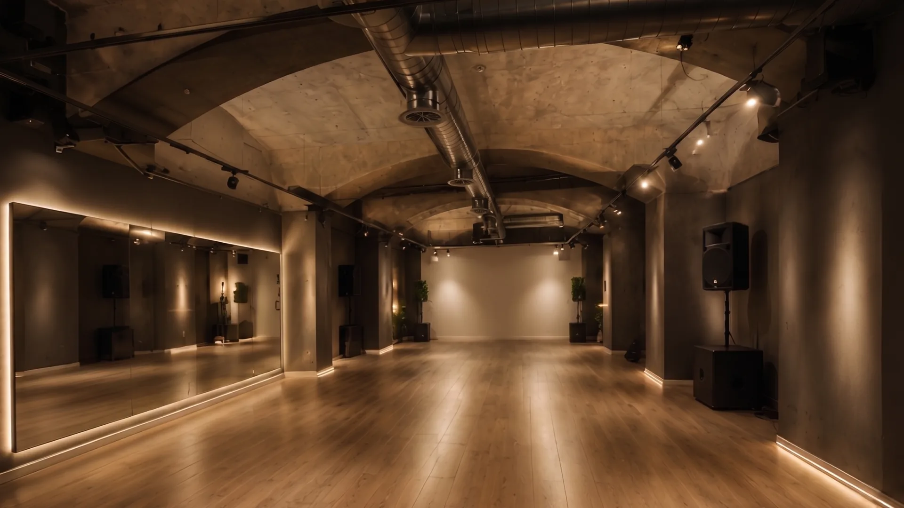
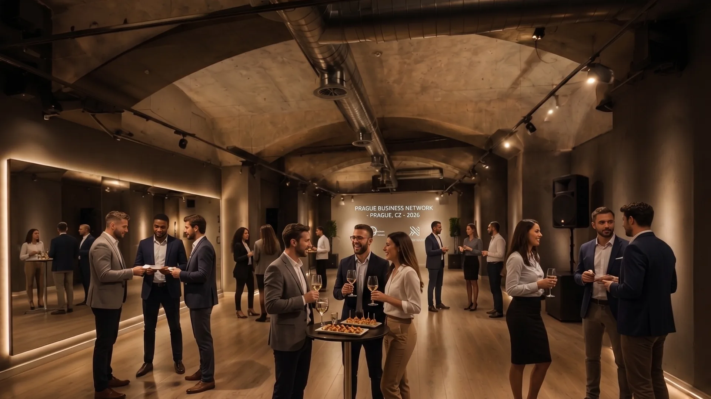
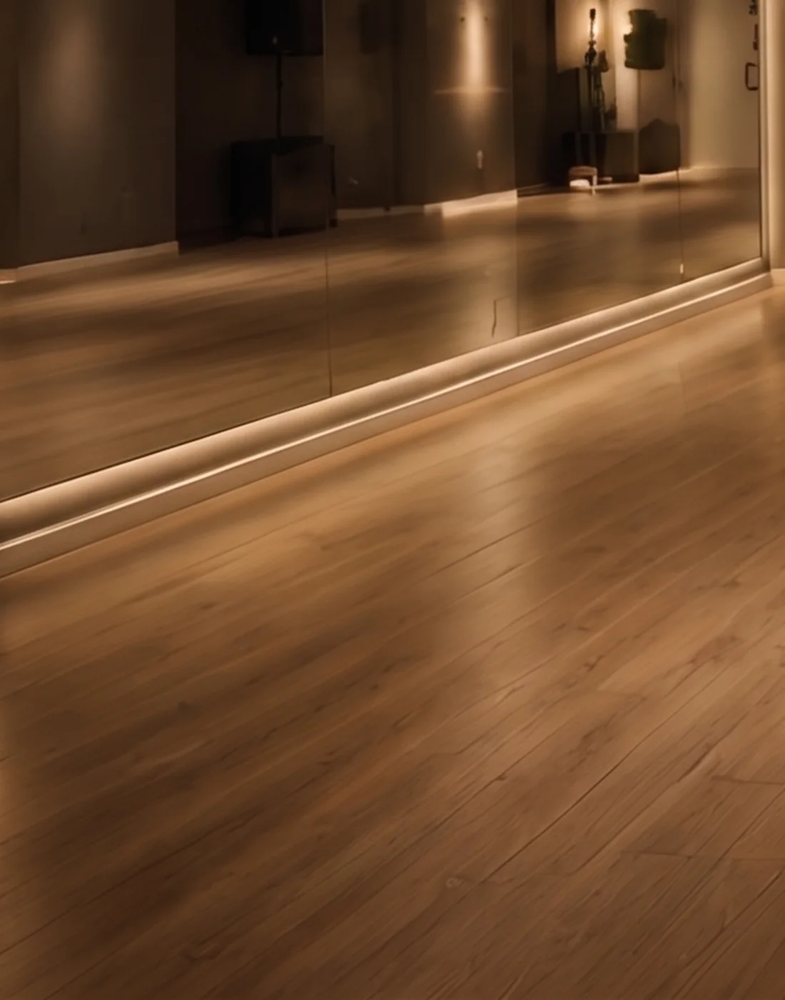

Dva prostory, jedno místo.
Velký sál na kurzy, workshopy a zkoušky. Malý na soukromé lekce a individuální trénink. Dají se vzít zvlášť i dohromady.



122 m² bez jediného sloupu.
Souvislý obdélník, ve kterém nic nestojí a nic nepřekáží. Světlá výška 3,4 m, takže se dá zvedat i nosit. Bodová světla na dvou lištách se regulují po sekcích — atmosféru si řídíte sami.
- Plocha
- 122 m²Poměr zhruba 4 : 1, souvislý parket
- Kapacita
- 30 tanečníků v páru, 40 sólo
- Světlá výška
- 3,4 m
- Podlaha
- vinyl na plovoucím roštuTlumí dopad, nekloužou, snese podpatek i piškot
- Zrcadla
- mobilní stěna 6 mDá se odsunout, když zrcadlo nechcete
- Ozvučení
- 2× aktivní monitorBluetooth, jack 3,5 mm, XLR pro vlastní pult
- Vzduch
- nucené větrání s rekuperací

20 m² pro dva a lektora.
Pro soukromé lekce, přípravu na svatbu a individuální trénink. Vejdou se čtyři lidé, kteří se opravdu hýbou.
- Plocha
- 20 m²
- Kapacita
- 4 osoby
- Zrcadlo
- pevné, 3 m
- Podlaha
- stejná jako ve velkém sále
- Ozvučení
- Bluetooth
- Šatna
- sdílená s velkým sálem
Co nedoplácíte.
- 01
Ozvučení
Reproduktory, kabely i Bluetooth. Vlastní pult připojíte přes XLR.
- 02
Světla a vzduch
Regulace po sekcích, nucené větrání. V zimě teplo, v létě snesitelně.
- 03
Šatna a úklid
Šatna s věšáky a lavicí. Sál po vás uklidíme, vy odnesete své věci.
- 04
Vstup na kód
Žádná recepce, žádné předávání klíčů. Kód přijde e-mailem.
Podlahu si musíte vyzkoušet.
Přijďte se projít po parketu, poslechnout ozvučení a podívat se na vstup. Dvacet minut, bez závazku.